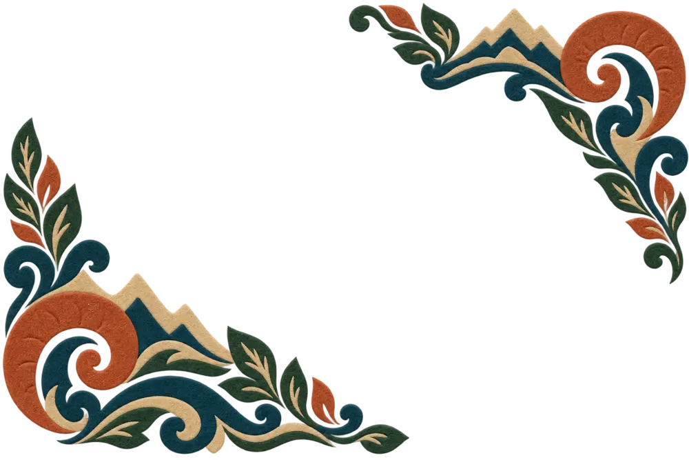
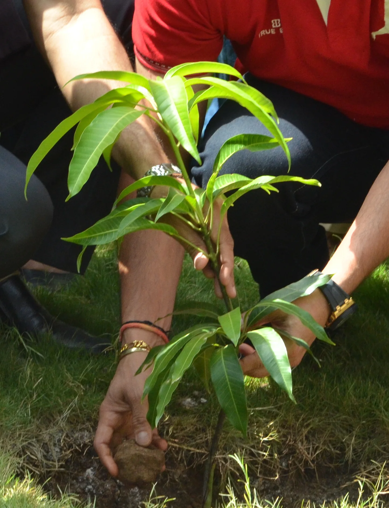
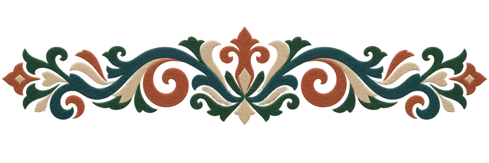
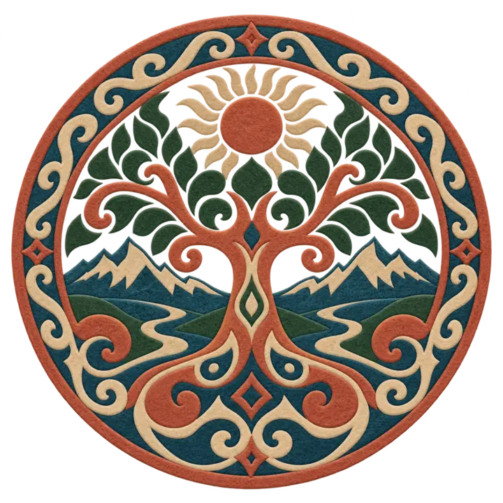
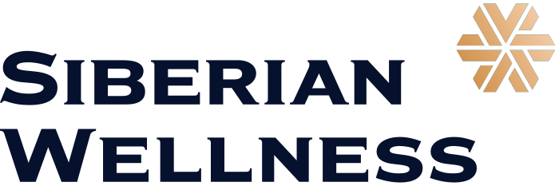

public Общественный фонд Кыргызстана
Возвращаем земле
живую зелень
Наша цель — посадить 100 000 деревьев вместе с жителями, волонтёрами и компаниями, которым важно будущее Кыргызстана.
Путь к цели17%
01 / О проекте
Большая цель начинается
Большая цель начинается
с одного дерева
«Таза Карма» объединяет людей вокруг простого действия с долгим результатом: посадить дерево, помочь ему прижиться и сохранить зелёное наследие для следующих поколений.

Задача
Больше устойчивых зелёных территорий
Высаживать деревья там, где они нужны, и превращать заботу о природе в понятное общее дело.
Подход
От саженца до ухода
Организовать посадку, объединить участников и поддерживать ответственность за результат после акции.
format_quoteМы хотим, чтобы посадка дерева стала естественным способом сказать Кыргызстану: «Мне не всё равно».
02 / Почему деревья
Одно дерево меняет
Одно дерево меняет
больше, чем кажется
Посадка — это не символический жест. Это тень, почва, воздух, вода и живое пространство, которое растёт год за годом.
eco
Дерево нельзя посадить «когда-нибудь». Лучшее время для живого будущего — сейчас.
Присоединиться arrow_forward03 / Кыргызстан
Земля, которую мы любим
Здесь горы встречаются с озёрами, степи — с лесами, а расстояние между хрупкостью и силой природы особенно заметно. Беречь Кыргызстан — значит сохранять место, которое формирует нас.


04 / Как это работает
Понятный путь
Понятный путь
от помощи до дерева
Каждый вклад становится частью общего результата: саженцы, организация посадки и забота о месте.
Вы поддерживаете
Выберите удобный способ: QR, PayPal или USDT TRC‑20.
Команда организует
Подготавливает саженцы, место, участников и день посадки.
Деревья растут
Участники высаживают деревья, а проект продолжает рассказывать о результате.
05 / Поддержать
Помочь проекту
Помочь проекту
можно прямо сейчас
Средства направляются на саженцы и организацию посадок. Выберите один из доступных способов поддержки.
qr_code_2 QR-код
Общественный фонд
Общественный фонд
"Таза Карма"
Для других стран:
PayPalctnastya@gmail.com
arrow_outward
06 / Партнёры проекта
Большие перемены
Большие перемены
делаются вместе
Компании и команды, которые уже поддержали экологические инициативы фонда участием, ресурсами и посадками.
поддержка посадок

совместные посадкиhandshakeСтать партнёромобъединить команду вокруг живого делаarrow_outwardbusiness_center Бизнесcampaign Медиаgroups Командыdiversity_1 Волонтёры
Люди, места
и живые истории
Следите за посадками, знакомьтесь с участниками и узнавайте, где команда действует дальше.